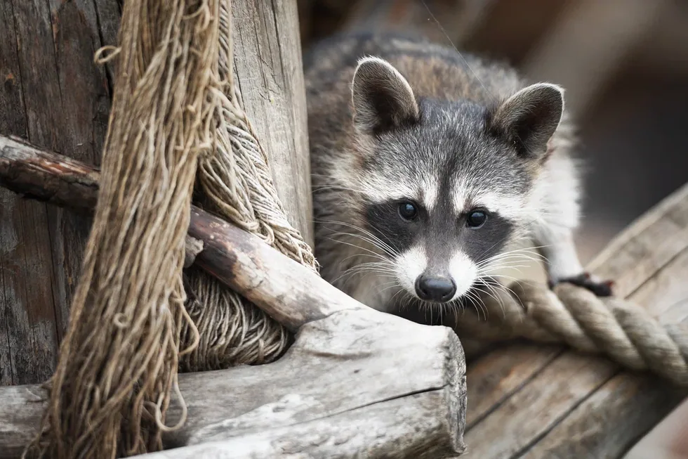
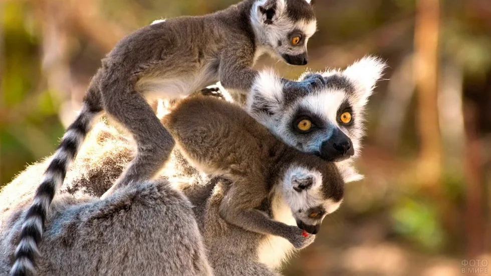
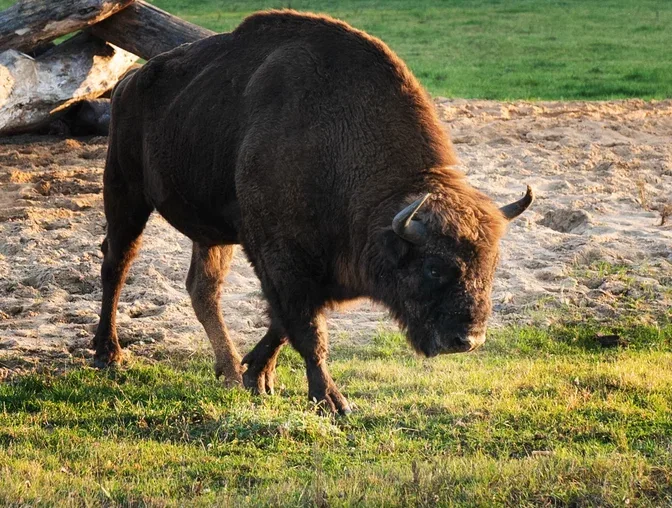
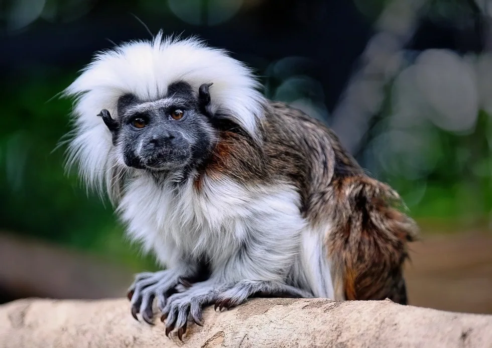

15:50 – 16:00
Кормление капибар
Вольер № 36 · Первая зона
Загружаем домик…
Перетащи яблоко к лапам
Открой две карточки с одинаковым животным.
Зона «Казачны мір»
Вольер № 36 · Первая зона
Время из опубликованного расписания. Проверьте его на дату поездки.
Расписание на сайте паркаПервая зона · Казачны мір
Вольер № 36
Hydrochoerus hydrochaeris
Глаза и уши капибары расположены высоко. Во время плавания они остаются над водой, даже когда почти всё тело погружено.
Выберите пешеходную зону
Пешеходная зона 1

Пешеходная зона 2

ХищныеЕнот-полоскун
ПриматыКошачий лемур ХищныеКаракал
ХищныеКаракал

ПарнокопытныеЕвропейский зубр
ПриматыЭдипов тамаринТаких животных в подборке нет.
Потри шерсть губкой

Веди корзинку пальцем. Поймай 5 из 8 яблок.
Тестовая касса. Оплата не списывается.